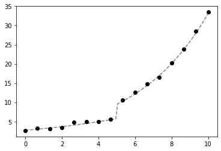
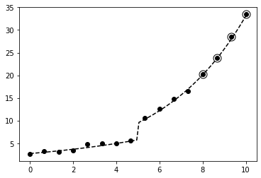
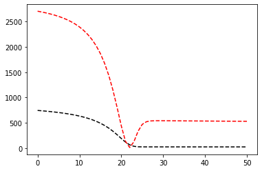
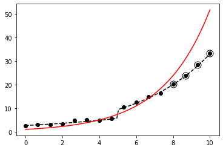
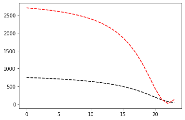

Optimización usando Early Stopping (parada temprana)¶
16:17 min | Ultima modificación: Marzo 11, 2020 | YouTube
[1]:
import math
import matplotlib.pyplot as plt
import numpy as np
%matplotlib inline
Función a aproximar usando un modelo de regresión¶
\[\begin{split}y=f(x)=
\begin{cases}
\exp \; (0.15 \cdot x + 1) & \text{si } x \lt 5 \\ \\
\exp\; (0.25 \cdot x + 1) & \text{de lo contrario}
\end{cases}\end{split}\]
[2]:
def f(x):
y = [math.exp(0.15 * u + 1) if u < 5 else math.exp(0.25 * u + 1) for u in x]
return np.array(y)
[3]:
np.random.seed(12345)
x_real = np.linspace(start=0, stop=10, num=100)
x_data = np.linspace(start=0, stop=10, num=16)
d_real = f(x_real)
d_data = f(x_data) + np.random.normal(0, 0.4, len(x_data))
plt.plot(x_real, d_real, "--", color="gray")
plt.plot(x_data, d_data, "o", color="black")
plt.show()

Partición del conjunto de datos¶
[4]:
# selecciona los primeros elementos del conjunto de datos
# para calibración y los 4 finales para testing
index = list(range(12))
# muestra usada para estimar los parámetros del modelo
x_fit = x_data[index]
d_fit = d_data[index]
# muestra usada para evaluar la generalización
x_test = np.delete(x_data, index)
d_test = np.delete(d_data, index)
plt.plot(x_data, d_data, "o", color="black")
plt.plot(x_real, d_real, "--", color="black")
plt.plot(x_test, d_test, "o", color="black", fillstyle="none", markersize=11)
plt.show()

Modelo de regresión¶
\[y = g(x) = \exp(w_0 + w_1 x)\]
[5]:
def g(w0, w1, x):
return [math.exp(w0 + w1 * xi) for xi in x]
Función de pérdida¶
\[\text{SSE}(w_0, w_1) = \sum_i [d_i - g(x_i)]^2\]
[6]:
def SSE(w0, w1):
y_fit = g(w0, w1, x_fit)
sse_fit = sum([(di - yi) ** 2 for di, yi in zip(d_fit, y_fit)])
y_test = g(w0, w1, x_test)
sse_test = sum([(di - yi) ** 2 for di, yi in zip(d_test, y_test)])
#
# note que la función devuelve simultaneamente
# los errores de ajuste y prueba
#
return sse_fit, sse_test
Gradiente de g()¶
Gradiente respecto a \(w_0\):
\[\begin{split}\begin{split}
\frac{\partial}{\partial w_0} g(x)
& = \frac{\partial}{\partial w_0} \left[ \exp(w_0 + w_1 x) \right] \\ \\
& = \exp(w_0 + w_1 x) \frac{\partial}{\partial w_0} (w_0 + w_1 x) \\ \\
& = \exp(w_0 + w_1 x) \cdot 1 \\ \\
& = \exp(w_0 + w_1 x) \\ \\
& = g(x)
\end{split}\end{split}\]
Gradiente respecto a \(w_1\):
\[\begin{split}\begin{split}
\frac{\partial}{\partial w_1} g(x)
& = \frac{\partial}{\partial w_1} \left[ \exp(w_0 + w_1 x) \right] \\ \\
& = \exp(w_0 + w_1 x) \frac{\partial}{\partial w_1} (w_0 + w_1 x) \\ \\
& = \exp(w_0 + w_1 x) \cdot x \\ \\
& = x \cdot \exp(w_0 + w_1 x) \\ \\
& = x \cdot g(x)
\end{split}\end{split}\]
[7]:
def grd_g(w0, w1):
grd_w0 = g(w0, w1, x_fit)
grd_w1 = [gi * xi for gi, xi in zip(grd_w0, x_fit)]
return grd_w0, grd_w1
Gradiente de la función de pérdida¶
\[\begin{split}\begin{split}
\frac{\partial}{\partial w_j} \text{SSE}(w_0, w_1)
& = \frac{\partial}{\partial w_j} \sum_i e_i^2 \\ \\
& = \sum_i \frac{\partial}{\partial w_j} e_i^2 \\ \\
& = \sum_i 2 \cdot e_i \cdot \frac{\partial}{\partial w_j} e_i \\ \\
& = \sum_i 2 \cdot e_i \cdot \frac{\partial}{\partial w_j} [d_i - g(x_i)] \\ \\
& = \sum_i 2 \cdot e_i \cdot \frac{\partial}{\partial w_j} - g(x_i) \\ \\
& = \sum_i -2 \cdot e_i \cdot \frac{\partial}{\partial w_j} g(x_i) \\ \\
\end{split}\end{split}\]
[8]:
def grd_SSE(w0, w1):
# calcula el error instantaneo
y_fit = g(w0, w1, x_fit)
e_fit = [di - yi for di, yi in zip(d_fit, y_fit)]
# gradiente de la funcion g()
grd_gw0, grd_gw1 = grd_g(w0, w1)
# gradiente de la función SSE()
grd_SSE_w0 = sum([-2 * ei * gi for ei, gi in zip(e_fit, grd_gw0)])
grd_SSE_w1 = sum([-2 * ei * gi for ei, gi in zip(e_fit, grd_gw1)])
return grd_SSE_w0, grd_SSE_w1
Corrección de los parámetros¶
\[\mathbf{w}_k = \mathbf{w}_{k-1} - \mu \frac{\partial}{\partial \mathbf{w}} \text{SSE}(\mathbf{w}_{k-1})\]
[9]:
def mejora(w0, w1, mu):
grd_w0, grd_w1 = grd_SSE(w0, w1)
w0 = w0 - mu * grd_w0
w1 = w1 - mu * grd_w1
return w0, w1
Proceso iterativo usando gradiente descendente¶
[10]:
w0, w1 = 0.0, 0.0 # coeficientes iniciales
sse_fit, sse_test = SSE(w0, w1)
history_sse_fit = [sse_fit]
history_sse_test = [sse_test]
for epoch in range(50):
w0, w1 = mejora(w0, w1, mu=0.00001)
sse_fit, sse_test = SSE(w0, w1)
history_sse_fit.append(sse_fit)
history_sse_test.append(sse_test)
print(w0, w1, SSE(w0, w1))
y_real = g(w0, w1, x_real)
plt.plot(history_sse_fit, "--k")
plt.plot(history_sse_test, "--r")
plt.show()
plt.plot(x_data, d_data, "o", color="black")
plt.plot(x_real, d_real, "--", color="black")
plt.plot(x_real, y_real, color="red")
plt.plot(x_test, d_test, "o", color="black", fillstyle="none", markersize=11)
plt.show()
0.07770616845298249 0.3869431892967564 (25.447857365832416, 530.3035876747726)


Early Stopping¶
[11]:
w0, w1 = 0, 0 # coeficientes iniciales
sse_fit, sse_test = SSE(w0, w1)
history_sse_fit = [sse_fit]
history_sse_test = [sse_test]
sse_test_previous = None
for epoch in range(100):
w0, w1 = mejora(w0, w1, mu=0.00001)
sse_fit, sse_test = SSE(w0, w1)
history_sse_fit.append(sse_fit)
history_sse_test.append(sse_test)
#
# Se monitorea sse_test. Si el sse_test
# aumenta, se detiene la optimización
#
if sse_test_previous is None or sse_test_previous > sse_test:
sse_test_previous = sse_test
else:
#
# aumenta el error de prueba
#
break
print(w0, w1, SSE(w0, w1))
y_real = g(w0, w1, x_real)
plt.plot(history_sse_fit, "--k")
plt.plot(history_sse_test, "--r")
plt.show()
plt.plot(x_data, d_data, "o", color="black")
plt.plot(x_real, d_real, "--", color="black")
plt.plot(x_real, y_real, color="red")
plt.plot(x_test, d_test, "o", color="black", fillstyle="none", markersize=11)
plt.show()
0.06428604867279972 0.37000034554740424 (37.25020797644438, 126.18643731436904)
